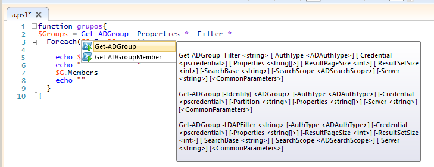
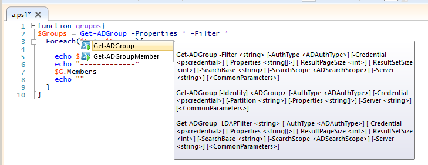

PowerShell Scripting#
Habilitar ejecución de scripts
Set-ExecutionPolicy Unrestricted
Variables y cadenas#
PS C:\> $a=5
PS C:\> echo a
a
PS C:\> echo $a
5
PS C:\> $a=2
PS C:\> $b=3
PS C:\> $c=$b+$a
PS C:\> echo $c
5
PS C:\> $a="cadena"
PS C:\> echo $a
cadena
PS C:\> echo $a.Replace("ca","CC")
CCdena
PS C:\> echo $a.split("a")
c
den
PS C:\> echo $a.Split("a")[0]
c
PS C:\> echo $a
cadena
PS C:\> echo $a.Substring(2,4)
dena
PS C:\> echo $a.Remove(2,4)
ca
PS C:\> echo $a.Contains("a")
True
PS C:\> echo $a.IndexOf("a")
1
PS C:\> echo $a.Replace("ca","Ca")
Cadena
PS C:\> echo $a.Equals("cadena")
True
PS C:\> echo $a.Length
6
PS C:\> echo $a.Contains("an")
False
PS C:\> echo $a.ToLower()
cadena
PS C:\> echo $a.ToUpper()
CADENA
Números aleatorios
Get-Random # numero aletorio Get-Random -Minimum 1 -Maximum 10
Conversiones
#si queremos pasar la cadena $Name a un entero: $a = $Name -as [int] # otra forma: $a = [int] $Name #pasar a binario [Convert]::ToString($decimal, 2) $a="$pwd" #obtenemos la salida del comando pwd, no es lo mismo que $a=$(pwd) #Podemos ejecutar un texto como si fuese un comando & $a="notepad" &$a
Operadores#
PS C:\> $a=11
PS C:\> $b=5
PS C:\> $c=$a-$b # resta
PS C:\> echo $c
6
PS C:\> $c=$a+$b # suma
PS C:\> echo $c
16
PS C:\> $c=$a*$b # multiplicación
PS C:\> echo $c
55
PS C:\> $c=$a/$b # división
PS C:\> echo $c
2,2
PS C:\> $c=$a%$b # resto o modulo
PS C:\> echo $c
1
Operadores de asignación#
PS C:\> $a=6
PS C:\> $a+=2 ; echo $a # $a=$a+2
8
PS C:\> $a-=2 ; echo $a # $a=$a-2
6
PS C:\> $a++ ; echo $a # $a=$a+1
7
PS C:\> $a-- ; echo $a # $a=$a-1
6
PS C:\> $a/=2 ; echo $a # $a=$a/2
3
PS C:\> $a*=3 ; echo $a # $a=$a*3
9
PS C:\> $a%=3 ; echo $a # $a=$a%3
0
Argumentos de entrada#
PS C:\> cat read_host.ps1
echo "Dame un entero"
$Name=Read-Host
echo "Sin pasar a int ($Name*$Name) = "
echo $($Name*$Name)
echo ""
$a = [int] $Name
echo "Pasando a int ($Name*$Name) = "
echo $($a*$a)
echo ""
PS C:\> .\read_host.ps1
Dame un entero
2
Sin pasar a int (2*2) =
22
Pasando a int (2*2) =
4
PS C:\> cat .\argst.ps1
echo "tenemos $args parámetros de entrada"
echo "El argumento 0: $($args[0])"
echo "El argumento 1: $($args[1])"
PS C:\> .\argst.ps1 1 2 3
tenemos 1 2 3 parámetros de entrada
El argumento 0: 1
El argumento 1: 2
PS C:\> cat .\argst.ps1
foreach ($i in $args)
{
echo $i
}
PS C:\> .\argst.ps1
1 dos tres 1 dos tres
Evaluación de condiciones#
7 -eq 7 #True
7 -eq 8 #False
3 -gt 2 #True
Operadores lógicos#
(5 -gt 1) -And (5 -lt 10) #True
(5 -gt 1) -And (5 -lt 10) #True
(5 -gt 1) -Or (5 -lt 1) #True
(5 -gt 1) -Xor (5 -lt 1) #True
-Not (5 -lt 1) #True
Comparación de cadenas#
"hola" -eq "hola" #True
"hola" -eq "hoa" #False
"hola" -ne "hoa" #True
"hola" -ne "hola" #False
Estructuras condicionales con if#
$numero = -10
If ($numero -gt 0) {
echo "$numero es mayor que 0"
}
If ($numero -gt 0) {
echo "$numero es mayor que 0"
}else{
echo "$numero es negativo"
}
Bucles con for#
for ($i=0;$i -lt 10;$i++){
echo $i
}
Bucles con While#
$i = 0
While ($i -le 10) {
echo $i
$i +=1
}
Bucles con Until#
$i = 0;
do {
echo $i
$i +=1
}
until ($i -gt 10)
Bucles con Foreach#
foreach ($num in 1,2,"hola",4,5) {
echo $num
}
Archivos#
echo "usuario,grupo" > usuarios.csv
echo "user01,group01" >> usuarios.csv
echo "user02,group02" >> usuarios.csv
echo "user03,group03" >> usuarios.csv
echo "user04,group04" >> usuarios.csv
Test-Path usuarios.csv #True ver si existe
#Leer el archivo linea a linea
foreach ($i in get-content usuarios.csv){
echo $i
}
#Podemos importarlo desde un csv
$A = Import-Csv -Path usuarios.csv
echo $A.usuario
#Podemos recorrer los valores
foreach ($i in $A){
$u=$i.usuario ; echo "usuario = $u"
}
Funciones#
function foo($a, $b, $c) {
"a: $a; b: $b; c: $c"
}
foo 1 3 5
# a: 1; b: 3; c: 5
Windows PowerShell ISE#

 
